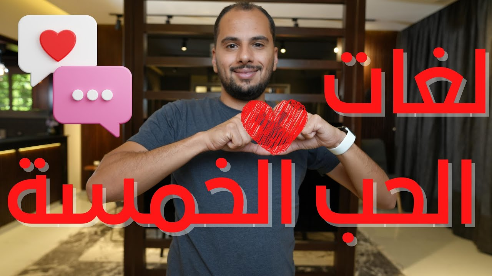

ملخص كتاب
لُغات الحب الخمس
بحسب Gary Chapman في كتاب لغات الحب الخمس، كل واحد فينا ليه لغة بيفهم بيها الحب، ومشاكل كتير في العلاقات بتبدأ لما كل طرف يعبّر عن حبه بلغته هو. واللغات الخمسة: كلمات التشجيع، وتخصيص الوقت، والهدايا، والأعمال الخدمية، والاتصال الجسدي.

شغّل الحلقةسألت Siri عن لغة الحب، وما كانش عنده إجابة.
النهارده هكلمك عن أسهل خمس لغات ممكن تتكلمها في الدنيا: لغات كل البشر على وجه الأرض بيفهموها كويس، حتى لو مش بيعرفوا يتكلموها. لغات في معظم الأوقات مش بيكون لها صوت تسمعه، لكنها في كل الأوقات مفهومة بإحساسك. لغات لا غنى عنها في كل التعاملات الإنسانية: مع أحبابك، مع أطفالك، مع أصحابك وعيلتك. لغات مش ممكن الإنسان يقدر يعيش من غيرها، لأنها لغات الحب.
إيه هي لغة الحب بتاعتك؟ 1:12
تخيّل معايا لو إحنا في مدينة واحدة، وكل واحد فينا بيتكلم لغة مختلفة. تفتكر هنعرف نتواصل مع بعض؟ في الحقيقة هنعرف نلاقي طريقة مشتركة: ممكن نشاور لبعض ونحاول نفهم بعض. لكن الطريقة دي مش هتكون أفضل طريقة تواصل، ومش كل الكلام ولا كل المعاني هنقدر نوصّلها لبعض.
وتعالى نتخيّل موقف أعمق شوية: لغتي الأصلية هي الإنجليزي، ولغتك الأصلية هي العربي، وكل واحد فينا بيكلّم التاني بلغته. أنا أقول لك «يا هلا مرحبا»، وإنت ترد عليّا وتقول لي «Hi, how are you». حاجة لذيذة، صح؟
الفكرة دي هي اللي قدّمها دكتور Gary Chapman، وهو مقدّم برامج إذاعية واستشاري في العلاقات وكاتب.1 Chapman جمع كل خبرته في التعامل مع مشاكل العلاقات والمشاكل الأسرية، وقدّم لها حلول في كتاب لغات الحب الخمس (The Five Love Languages).
وفكرة الكتاب باختصار، بحسب Chapman، إن كل واحد فينا ليه لغة أم بيفهم بيها مشاعر الحب، وإن معظم المشاكل في العلاقات بتكون بسبب ضعف التواصل. والضعف ده نتيجة إن كل طرف في العلاقة بيكلّم التاني بلغته هو، اللي ممكن ما تكونش مفهومة بشكل كافي للطرف التاني. زي الناس اللي في المدينة دي بالضبط: ممكن يفهموا بعض، لكن التواصل مش بيكون في أفضل صوره.
والحل اللي بيأكد عليه Chapman في كتابه إن كل طرف يكلّم التاني باللغة بتاعته، وبمعنى أدق: نعبّر عن حبنا للطرف التاني بالطريقة اللي هو بيفهمها.
خد مثال: زوجة لغة الحب الأساسية عندها هي الكلمات الرقيقة، فعاوزة جوزها في الرايحة والجاية يقول لها كلام حب. وجوزها ممكن تكون لغة الحب عنده هي الاهتمام، فمستني من مراته إنها تهتم بكل حاجة في حياته. وهنا بتحصل المشكلة: الزوجة بتعبّر عن حبها باللغة اللي هي بتفهمها، اللي هي كلام الحب، والزوج بيعبّر عن حبه بالاهتمام. فالاتنين مش بياخدوا اللي هم عاوزينه، وتبدأ المشاكل، ويبدأوا يفكروا إن الطرف التاني مش بيحبهم.
لكن لو عكسنا المثال، والزوج بدأ يعبّر عن حبه بكلام رقيق، والزوجة عبّرت عن حبها بالاهتمام، فبحسب Chapman الاتنين هيفهموا بعض كويس جدًا، والعلاقة هتكون أفضل. وتخيّل بقى لو في كل علاقاتك بتتعامل مع الناس بلغات الحب المختلفة. فاضل بس نعرف إيه هي اللغات دي.
كلمات التشجيع والثناء: إزاي الكلمة توصّل الحب؟ 3:23
أول لغة من لغات الحب هي كلمات التشجيع (Words of Affirmation)، والمقصود بيها إننا نعبّر عن حبنا للطرف التاني بكلمات رقيقة. والمهم إن الكلمات دي ما تطلعش على إنها كلمات محفوظة بنرددها وخلاص؛ الطريقة اللي بتقول بيها الكلمة لازم تكون فعلًا معبّرة عن معناها.
ومن أهم كلمات التشجيع وأكترها تأثيرًا: الشكر. تشكر زوجتك على تعبها في البيت، أو تشكر والدتك على الرعاية اللي بتقدّمها لك. اشكر على كل حاجة، وقدّم الشكر بكل صدق، لأن كلمات الشكر بتحسّس الطرف التاني إنك حاسس بيه، ومقدّر اللي بيعمله علشانك.
ونفس الكلام مع أطفالنا: شجّعوهم على أبسط الحاجات اللي بيعملوها، وكرّروا كلمات زي «هايل» و«ممتاز» و«برافو»، واشكروهم كمان لو ساعدوكم في أي حاجة.
والمستوى التاني من كلمات التشجيع والشكر إنك تمدح وتشكر في الطرف التاني قدام الناس، ودي حاجة ممكن تخلّي شريكك أو ابنك في قمة سعادتهم. وخليك عارف إن كلمات بسيطة وصادقة أفضل من قصايد وأشعار مش محسوسة.
تخصيص الوقت: ليه الوقت من غير مشتتات لغة حب؟ 4:19
من أكتر اللغات المعبّرة عن الحب تخصيص الوقت (Quality Time): إنك تخصّص وقت تكون فيه مع الطرف التاني من غير أي مشتتات. ممكن تتفرج على فيلم مع زوجتك وأطفالك، أو تخصّص وقت تخترع فيه أكلة جديدة في المطبخ. المهم في اللغة دي إنك تكون مثبّت وقت تقعد فيه مع الطرف التاني، من غير ما يكون فيه أي حاجة تشغلك عنه.
ويمكن كتير من الآباء والأزواج مش بيقدروا يتكلموا اللغة دي، نتيجة انشغالهم الدايم. لكن صدقني، دايمًا فيه وقت كافي. فحاول تخصّص وقت، حتى لو قليل، بس يكون منتظم، تقعد فيه مع أولادك وأحبابك.
الهدايا: هل قيمة الهدية هي اللي بتفرق؟ 4:50
تالت لغة هي لغة الهدايا (Receiving Gifts)، ومين فينا مش بيحب تجيله هدية؟ إنك تقدّم هدية لشريكك أو لطفلك حاجة معبّرة جدًا عن حبك، خصوصًا لو قدّمت الهدية من غير مناسبة. مش لازم الهدايا تكون في أعياد الميلاد والمناسبات الرسمية.
والفكرة دايمًا في الهدية مش في قيمتها: هي لغة بتستخدمها عشان تعبّر بيها عن حبك. فالهدايا زي الكلمات، لازم تختارها كويس وتكون معبّرة.
الأعمال الخدمية: إزاي المساعدة بتبقى لغة حب؟ 5:16
لغة الحب الرابعة هي الأعمال الخدمية (Acts of Service)، وهي ببساطة لما الزوجة تهتم إن جوزها لما يرجع يلاقي البيت متوضّب ومترتّب، أو لما الزوج ياخد شنطة الزبالة معاه وهو ماشي. وياه بقى لو كمان صلّح الحنفية اللي بتنقّط من غير ما زوجته تطلب.
أنا مش بهزّر: فيه كتير من الأزواج والزوجات دي بتكون لغة الحب الأساسية عندهم، لأنها بتحسّسهم بالاهتمام من الطرف التاني. فعشان تتقن اللغة دي، حاول تقدّم المساعدة للطرف التاني في الحاجات اللي بيعملها. وياه بقى لو قدّمت له المساعدة من غير ما يطلبها، وخصوصًا في الحاجات اللي بتكون تقيلة عليه ومش بيحب يعملها.
الاتصال الجسدي: وإزاي تتقن لغات الحب؟ 5:48
أما اللغة الخامسة فهي الاتصال الجسدي (Physical Touch): إنك تمسك إيد زوجتك في الشارع، أو تحضن طفلك كل شوية، وغيرها من الطرق اللي بنعبّر بيها عن حبنا للطرف التاني من خلال الاتصال الجسدي.
وأخيرًا، لغات الحب الخمسة زيها زي أي لغة، بتحتاج تمارين وممارسة. ودلوقتي أفكّرك بشعارنا: اليوم أفضل من الأمس، وغدًا سيكون الأفضل.
فصول الحلقة
أسئلة شائعة
إيه هي لغات الحب الخمسة؟
بحسب Gary Chapman، لغات الحب الخمسة هي كلمات التشجيع، وتخصيص الوقت، والهدايا، والأعمال الخدمية، والاتصال الجسدي.
ليه بتحصل مشاكل في العلاقات بحسب Chapman؟
بحسب Chapman، معظم المشاكل في العلاقات بتكون بسبب ضعف التواصل، لأن كل طرف بيكلّم التاني بلغته هو، واللي ممكن ما تكونش مفهومة بشكل كافي للطرف التاني.
هل الهدية لازم تكون غالية أو في مناسبة؟
لأ، الفكرة في الهدية مش في قيمتها، ومش لازم تكون في أعياد الميلاد والمناسبات الرسمية. الهدية من غير مناسبة بتكون معبّرة جدًا، والمهم إنك تختارها كويس.
إزاي أتقن لغة الأعمال الخدمية؟
حاول تقدّم المساعدة للطرف التاني في الحاجات اللي بيعملها، وخصوصًا من غير ما يطلبها، وفي الحاجات التقيلة عليه واللي مش بيحب يعملها.
تصحيحات
- قلت إن لغات الحب «الاكتشاف اللي اكتشفه دكتور Gary Chapman»؛ الأدق إنها فكرة طوّرها Chapman من شغله كمستشار علاقات مع أزواج، مش اكتشاف علمي.13 ومراجعة علمية نشرتها Emily Impett وزمايلها في مجلة Current Directions in Psychological Science سنة 2024 لقت إن الأبحاث عن لغات الحب قليلة، وإنها ما بتقدّمش دعم قوي لأفكار الكتاب الأساسية التلاتة: إن لكل واحد لغة حب أساسية، وإن اللغات خمسة، وإن الأزواج بيبقوا أسعد لما كل واحد يكلّم التاني باللغة اللي التاني بيفضّلها.2
- قلت إن فيه ملايين من الناس حسّنوا حياتهم وعلاقاتهم بعد ما فهموا اللغات دي؛ ما لقيتش دراسة بتثبت ده، ونفس المراجعة لقت إن التعبير عن الحب بأي لغة من الخمسة مرتبط برضا أكبر عن العلاقة، بغض النظر عن اللغة المفضلة عند الشخص.2